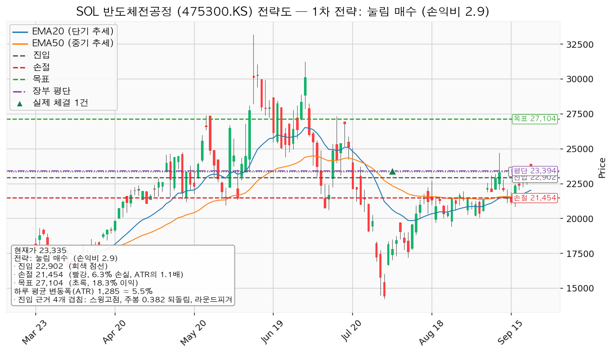
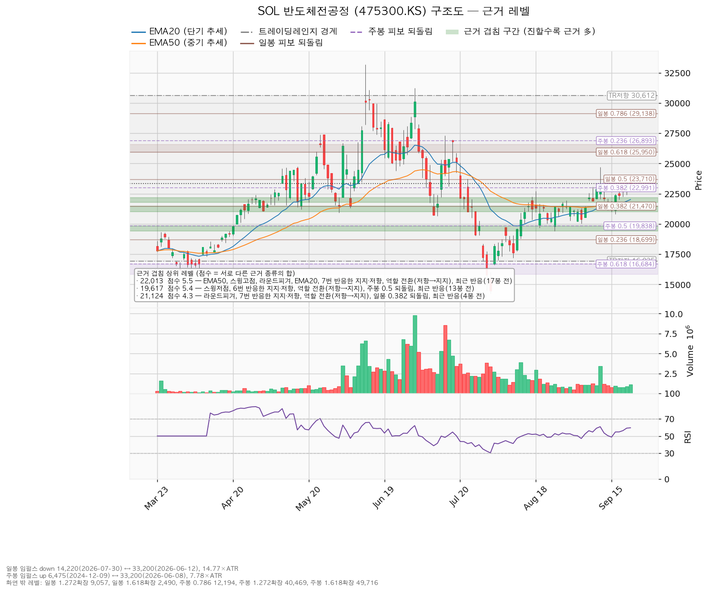
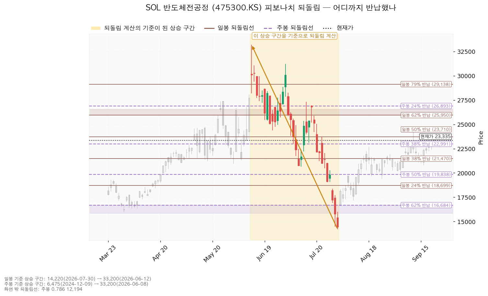
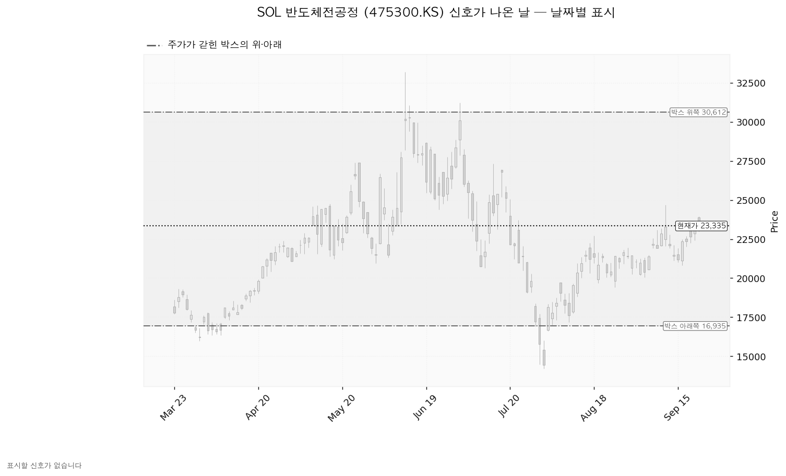

SOL 반도체전공정 (475300.KS)은 웨이퍼에 회로를 새기는 전공정 단계의 국내 반도체 장비·소재 기업에 투자하는 상장지수펀드입니다.
| 이름 | 가격 | 현재가 대비 | 판정 방식 | 상태 |
|---|---|---|---|---|
| 회복선 | 24,693원 | +5.82% | 일봉 종가로 회복한 뒤 되돌림에서 지지되는지 | 회복 대기 |
| 집행 손절 | 21,454원 | -8.06% | 저가 터치 (보유 350주에 지금 유효) | 유지 중 |
| 관망 종료 기준 | 21,617원 | -7.36% | 일봉 종가 아래 마감 → 매수 계획 종료·보유분 유지 | 유지 중 |
| 확인선 | 27,104원 | +16.15% | 일봉 종가 돌파 후 되돌림 지지 확인 | 미돌파 |
| 폐기선 | 16,935원 | -27.43% (4.98 ATR) | 이탈 후 3거래일 내 회복 실패, 또는 그 전에 15,650원 아래 종가 마감 + 반등에서 저항으로 확인 | 유지 중 |
코스피 7,026이 200일 이동평균 6,237 위(+12.65%)라 신규 진입이 가능한 국면입니다.
| 항목 | 값 |
|---|---|
| 셋업 | 되돌림 매수 (평균회귀 — 지지로 눌릴 때 산다) |
| 진입 | 22,902원 (현재가 -1.86%, 0.34 ATR 아래) |
| 진입 근거 겹침 (3.8점) | 스윙고점 · 주봉 0.382 되돌림 · 라운드피겨 · 최근 반응(25봉 전), 구간 22,715~23,000원 |
| 집행 손절 | 21,454원 — 손절 폭 1,448원(1.13 ATR, -6.32%) |
| 손절 근거 | 겹침 구간(21,775~22,171원, 5.5점) 바로 아래로 밀어냈습니다 |
| 목표 | 27,104원 전량 청산 |
| 손익비 | `1:2.90` (손절 폭 1.13 ATR) |
| 구조 증명도 | 선취형 — 구조가 증명되기 전에 되돌림에서 먼저 잡는 형태이며, 진입가는 유리하나 실패 확률이 높습니다 |
손절은 이미 겹침 구간 아래로 밀려난 구조적 손절이라 이와 별개의 구조적 손절 기준 손익비가 따로 나오지 않았습니다. `1:2.90`이 곧 구조적 손절 기준 값이며, 손절을 하루 변동폭 안으로 조여서 얻은 숫자가 아닙니다.
대표로 고른 이유: 손익비 2.9 × 구조 증명도(선취형) × 근거 겹침 3.8점입니다. 상대강도·거래량 배수 1.047배(지수 대비 20일 초과수익 +4.69%)가 순위에 곱해졌지만, 다른 후보인 돌파 매수(진입 24,693원, 손익비 `1:1.05`)와 점수 차가 커서 이 배수가 대표를 바꾸지는 않았습니다. 돌파 매수는 손익비가 얇아 이번 계획에 넣지 않습니다.
청산은 27,104원 전량 하나이고 트레일링은 걸지 않습니다. 함께 산출된 분할 청산 판본은 23,855원에서 50%를 익절(그 지점까지의 손익비 `1:0.66`)하고 잔여 50%를 27,104원까지 끌되 잔여분 손절을 22,902원(본전)으로 올리는 것이며, 전 구간 손익비는 `1:1.78`, 절반 익절 뒤 본전에서 끊길 때의 하한은 `1:0.33`입니다 — 이 리포트는 이 판본을 채택하지 않습니다.
확인선 27,104원은 목표와 같은 가격입니다. 여기서 막히고 되밀리면 전량 청산이고(그게 목표였습니다), 일봉 종가로 넘기면 상승 확정이므로 그때는 이 포지션의 연장이 아니라 새 셋업으로 다시 잡습니다.
계획 진입가 22,902원은 장부 평단 23,394원 아래라 평단을 낮추는 매수입니다.

| 단계 | 트리거 | 행동 |
|---|---|---|
| 1 관찰 | 일봉 종가가 22,902원 아래로 마감 | 신규 진입만 중단. 되돌아 올라오면 속임수 하락일 수 있어 아직 무효가 아닙니다 |
| 2 경고 | 이탈 후 3거래일 안에 22,902원을 종가로 회복하지 못함, 또는 그 전에 일봉 종가가 21,617원 아래로 마감 — 둘 중 먼저 오는 쪽 | 잔여 비중 축소. 반등에서 이 가격의 반응을 확인합니다 |
| 3 무효 | 반등이 22,902원에서 막히고 그 아래로 되밀림 | 포지션 정리 후 새 구조가 만들어질 때까지 관망 |
집행 손절 21,454원은 이 판정이 몇 단계에 있든 무관하게 별도로 작동합니다. 장중 일시 이탈은 어느 단계에도 해당하지 않습니다.
논지 무효화: 폐기선 16,935원이 현재가에서 하루 평균 변동폭의 4.98배 아래라 실무상 쓸 수 없으므로, 가격 대신 전방 고객사 실적으로 겁니다 — 2026-10-27·10-28 실적에서 2027년 설비투자 계획이 축소로 제시되면 이 ETF가 담는 전공정 장비·소재의 수주 전제가 깨지며, 그때는 보유분을 정리합니다. 미진입자가 실제로 볼 선은 관망 종료 기준 21,617원입니다.
상승 전환 — 24,693원을 일봉 종가로 회복한 뒤 지지되면 27,104원 종가 돌파로 이어집니다. 24,693원 회복·지지를 확인한 뒤 분할 진입하고, 27,104원을 넘기면 비중을 늘립니다.
횡보 지속 — 16,935원을 지키며 27,104원 아래 박스를 유지하는 갈래입니다. 구조는 그대로이고 매물 소화에 시간이 필요한 국면이며 부정적 신호가 아닙니다. 추적할 것은 셋입니다 — 지지를 다시 시험할 때 매도 거래량이 줄어드는지, 저점이 계속 절상되는지, 오를 때 거래량과 캔들 폭이 커지는지. 지금 관측치는 레인지 안에서 저점 절상, 상승봉 대 하락봉 거래량비 1.1입니다.
시나리오 폐기 — 16,935원 이탈 후 3거래일 내 회복에 실패하거나 그 전에 15,650원 아래로 종가 마감하고, 반등에서 16,935원이 저항으로 확인될 때입니다. 매집이 아니라 재분산이었다는 뜻이며 추가 저점 갱신 가능성을 엽니다. 포지션 정리 후 새 매도 절정과 새 박스가 만들어질 때까지 관망합니다.
| 가격대 | 겹침 점수 | 근거 |
|---|---|---|
| 21,775~22,171원 | 5.5 | 20일선 · 50일선 · 스윙고점 · 라운드피겨 · 7번 반응한 가격 · 역할 전환(저항→지지) · 최근 반응(17봉 전) |
| 19,400~19,838원 | 5.4 | 스윙저점 · 6번 반응한 가격 · 역할 전환(저항→지지) · 주봉 0.5 되돌림 · 최근 반응(13봉 전) |
| 21,000~21,470원 | 4.3 | 라운드피겨 · 7번 반응한 가격 · 역할 전환(저항→지지) · 일봉 0.382 되돌림 · 최근 반응(4봉 전) |
| 22,715~23,000원 | 3.8 | 스윙고점 · 주봉 0.382 되돌림 · 라운드피겨 · 최근 반응(25봉 전) — 진입 자리 |
| 26,893~27,315원 | 2.7 | 주봉 0.236 되돌림 · 스윙고점 — 목표이자 확인선 |
박스는 최근 90봉(조회된 일봉 632개 중)을 창으로 잡았고 16,935~30,612원, 가격이 이 안에 97.8% 담깁니다. 40봉 창은 담김이 72.5%에 그쳐 성립하지 않았고 180봉 창은 성립하지만 폭이 하루 변동폭의 13.87배로 더 넓습니다. 직전 90봉 구간(13,025~20,543원)과 가격대가 겹쳐 같은 횡보의 연장으로 봅니다 — 위에서 내려와 갇힌 것이 아닙니다.
박스 안쪽 판정은 중립입니다. 지지 테스트는 2026-07-30 저가 14,220원 한 번뿐이고 그날 거래량은 20일 평균의 0.92배였으며, 테스트가 한 번이라 거래량 추세는 산출되지 않았습니다. 저점은 절상 중이고 상승봉 대 하락봉 거래량비는 1.1입니다. 매집 우위로 볼 근거는 저점 절상 하나뿐이라 지지 확인 매수는 산출되지 않았습니다. Wyckoff 이벤트(속임수 하락·거짓 돌파 등)는 이 구간에서 하나도 잡히지 않았습니다.

되돌림은 두 시계가 서로 다른 구간을 잡았습니다. 일봉은 2026-06-12 33,200원에서 2026-07-30 14,220원까지의 하락을 기준으로 삼아 현재가 23,335원이 0.5 되돌림선 23,710원 바로 아래에 있고, 이 하락분의 절반 가까이를 되돌린 상태입니다. 주봉은 2024-12-09 6,475원에서 2026-06-08 33,200원까지의 상승을 기준으로 삼아 0.382 되돌림선이 22,991원, 0.236 되돌림선이 26,893원입니다. 진입 22,902원과 목표 27,104원이 각각 이 두 주봉 선 부근이며, 두 시계가 같은 자리를 가리키는 것이 이번 셋업의 겹침 근거입니다.

신호일 차트에는 표시할 캔들이 없습니다. 속임수 하락·거짓 돌파·강세 신호·약세 신호 어느 것도 이 박스 구간에서 잡히지 않았기 때문입니다. 국면은 상승 진행 국면 후보로 분류돼 있으나 이는 신호일이 아니라 상승 추세와 이동평균 정배열만 보고 붙은 이름이므로, 신호로 뒷받침된 판정이 아닙니다.

이 종목은 상장지수펀드라 기업 재무·컨센서스 조회가 되지 않습니다. 후행·선행 배수, 목표주가 분포, 이익 추정치 방향, 현금흐름, 상승 여력 분해 다섯 가지 모두 산출할 수 없어 이 리포트의 판단은 전적으로 가격 구조와 지수 대비 상대강도에 기댑니다. 상대강도는 코스피 대비 20일 +4.69%, 60일 +4.85%, 120일 +6.89%이고 가중 초과수익은 +5.29%입니다(가중치 20일 0.45 · 60일 0.30 · 120일 0.25). 상대강도선은 60일 신고가를 내지 못했습니다 — 지수를 이기고는 있으나 앞서 나가는 단계는 아닙니다.
| 날짜 | 이벤트 | 왜 보는가 |
|---|---|---|
| 2026-10-27 | SK하이닉스 실적 | 전공정 장비·소재 수주의 전방 설비투자 방향 |
| 2026-10-28 | 삼성전자 실적 | 같은 이유 |
| 2026-10-28 | FOMC 금리 결정 | 성장 업종 배수에 영향 |
상장지수펀드 자체는 실적 발표가 없습니다. 위 두 실적일은 조회로 얻은 전방 고객사의 날짜입니다. 그 이후 분기에 이미 알려진 역풍이 있는지는 확인할 자료가 없어 적지 않습니다.
계좌 1%(1,394,984원)를 손절 폭 1,448원으로 나누면 963주·22,054,645원이고 계좌의 15.8%입니다. 한 종목 13% 상한에 걸려 791주·18,115,498원(12.99%)으로 제한하며, 보유 350주를 빼면 추가 매수는 441주·10,099,791원까지입니다. 반도체 테마 합계는 지금 13.14%이고 이 매수 뒤 20.4%로 35% 한도 안에 남습니다.
도구 적합성은 문제없습니다. 하루 평균 변동폭 1,285원이 주가의 5.51%로 8% 아래이고 손절 폭이 그 1.13배라, 논지와 무관한 하루치 흔들림에 체결될 폭이 아닙니다.
최종 판정: 보유 350주 유지, 추가 매수는 22,902원 되돌림 대기, 손익비 `1:2.90`. 현재가 23,335원은 진입가 위이므로 지금 사지 않습니다. 미달 항목 셋(52주 고점 대비 -29.71%, 상대강도선 신고가, 거래량 강도 0.86배)이 남아 있고, 그중 거래량 강도는 되돌림이 진행되며 매물이 마르는지를 22,902원 도달 전까지 확인할 항목입니다.
ATR: 하루 평균 변동폭. 되돌림선(피보나치): 앞선 상승·하락의 일정 비율만큼 값이 되돌아오는 자리. 손익비: 감수하는 손실 대비 노리는 이익의 비율. 겹침 점수: 서로 다른 종류의 근거가 같은 가격대에 몇 개 모였는지를 합산한 값.